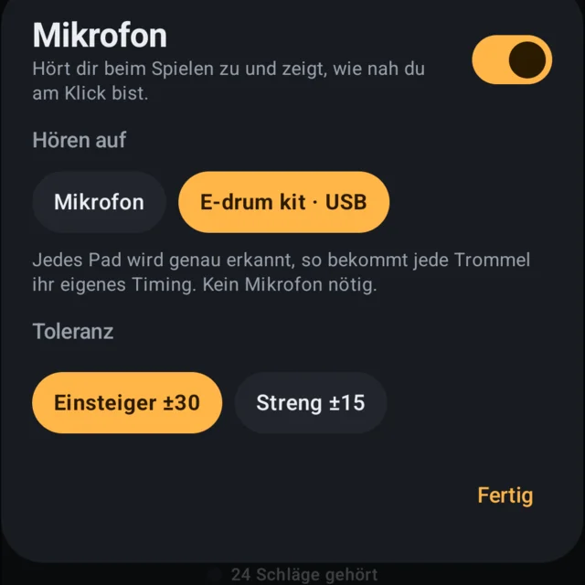
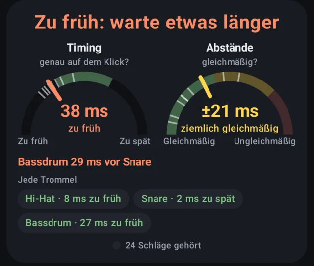

Ein klares, stabiles MetronomGratis
Alle gängigen Taktarten, Viertel bis Sechzehntel und Triolen, Tap-Tempo und verschiedene Klicks. Der Rhythmus wird als echte Notenschrift gezeigt, damit du siehst, was du hörst.
Drum Trainer & Metronome bringt dich vom allerersten Schlag bis zu ganzen Grooves: Lektionen Schritt für Schritt, ein Timing-Coach, der hört, ob du zu früh oder zu spät bist, und Übungsserien, die dich dranbleiben lassen. Schließ dein E-Drum per USB an, und jedes Pad wird genau getimt.
Android 8 und neuer


Von einem Schlagzeug-Anfänger für Anfänger gebaut, für akustische Sets, E-Drums und Übungspads.
Alle gängigen Taktarten, Viertel bis Sechzehntel und Triolen, Tap-Tempo und verschiedene Klicks. Der Rhythmus wird als echte Notenschrift gezeigt, damit du siehst, was du hörst.
Vom Mitzählen und ersten Schlägen bis zum einfachen Rockbeat, Fills und Sechzehnteln. Jede Lektion hat ein Starttempo, ein Ziel, Tipps und zwei Takte zum Einzählen.
Spiel los, und zwei Anzeigen zeigen, ob du vor oder hinter dem Klick liegst und wie gleichmäßig deine Schläge sind. Er hört akustische Sets und Übungspads übers Mikrofon und E-Drums exakt per USB.
Übe nur mit rechts, nur mit links, nur mit den Händen oder nur mit dem Fuß. Mit E-Drums bekommt jede Trommel ihr eigenes Timing, und der Coach sagt dir, wenn Bassdrum und Snare nicht zusammen kommen.
Ein Übungskalender, dein Timing-Verlauf über die Einheiten und ein Tagebuch für Notizen zu jedem Tag.
Leg fest, wie oft du üben willst, lass dich zu deiner Zeit erinnern und sammle Abzeichen für Tage und Wochen in Folge.
Gemacht für E-Drums. Schließ dein E-Drum per USB-Kabel ans Handy an, und der Coach liest jedes Pad direkt: millisekundengenau, jede Trommel einzeln getimt, ganz ohne Mikrofon. So verbindest du es →
Dein Mikrofon bleibt privat. Was der Timing-Coach hört, wird auf deinem Handy ausgewertet, nie gespeichert und nirgendwohin gesendet. Kein Konto, keine Werbung, kein Tracking.


Mit einem E-Drum braucht der Coach kein Mikrofon. Das Modul sagt der App, welches Pad du wann getroffen hast, auf die Millisekunde. Bassdrum, Snare und Hi-Hat bekommen ihr eigenes Timing, und der Klick kann nie für einen Schlag gehalten werden.
Meist hinten oder seitlich, beschriftet mit USB, USB MIDI oder „to host“. Er hat eine dieser Formen:
Ein Kabel mit dem Stecker des Moduls an einem Ende und USB-C am anderen, oder das übliche USB-Kabel des Moduls plus ein kleiner USB-C-Adapter (oft als „OTG“ verkauft). Es muss ein Datenkabel sein: Manche billigen Kabel laden nur.
Das Handy erkennt das Set sofort. Nichts zu installieren oder zu koppeln.
Tippe auf Mikro und wähle unter Hören auf dein Set. Die Wahl bleibt gespeichert.

Jede Trommel bekommt ihr eigenes Timing, und der Coach zeigt dir Trommeln, die zusammen kommen sollten, es aber nicht tun, etwa eine Bassdrum vor der Snare.

Das Metronom ist kostenlos, für immer. Premium schaltet das Coaching frei, und du kannst alles 7 Tage gratis testen.
Preise in Euro; Google Play zeigt den Preis für dein Land. Kündigst du das Monatsabo in der Gratiswoche, zahlst du nichts.
Ja, und damit am besten. Verbinde das Modul per USB (siehe E-Drum verbinden), und der Coach liest jedes Pad direkt: genaues Timing für jede Trommel, ohne Mikrofon, bei jeder Lautstärke. Hat dein Modul keinen USB-Anschluss, wähle in den Mikro-Einstellungen „Pad / E-Drum“, dann hört das Mikrofon auf das Tippen der Sticks.
Jedes Modul, das MIDI über USB sendet, und das tun die meisten aktuellen Sets. Such am Modul einen Anschluss mit der Aufschrift USB, USB MIDI oder „to host“. Ältere Module mit nur einer runden 5-poligen MIDI-Buchse gehen über ein USB-MIDI-Interface-Kabel.
Nein. Das Mikrofon wird live auf deinem Handy ausgewertet, um deine Schläge zu timen. Die letzten Sekunden bleiben für „Anhören“ im Arbeitsspeicher und werden dann verworfen. Nichts wird gespeichert oder hochgeladen.
Jedes Handy spielt und nimmt Ton mit kleiner Verzögerung auf, oft 50–100 ms. Einmal in einem ruhigen Raum kalibrieren misst diese Verzögerung, damit der Coach wenige Millisekunden zu früh von zu spät unterscheiden kann.
Ja. Die App hat keine Konten, keine Werbung, keinen Chat und erhebt keine personenbezogenen Daten. Käufe laufen über Google Play, also kann Family Link die Zustimmung eines Elternteils verlangen.
In der Google-Play-App: auf dein Profilbild tippen, dann Zahlungen & Abos, dann Abos. Du erreichst es auch über den Premium-Bildschirm der App.
Nein. Melde dich mit demselben Google-Konto an und tippe auf dem Premium-Bildschirm auf „Käufe wiederherstellen“.
Einen Fehler gefunden, eine Idee für eine Lektion oder Hilfe bei einem Kauf nötig? Schreib uns, und bei einem Problem nenn bitte dein Handymodell und deine Android-Version.
An den Support schreibenapp_support.keenly472@passmail.com